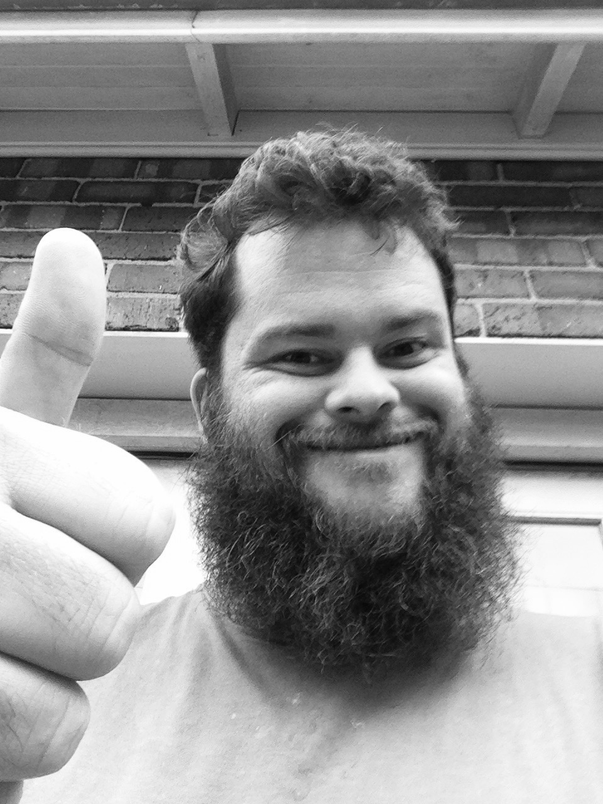

About Me

Current Location
I'm living the the Blue Mountains, West of Sydney, Australia.
First Computer
My first family PC was a Radio Shack TRS-80; My first personal PC was a IBM-XT.
Favourite Food
So hard to pick from, a tie between wood-fired pizza and well made, quality hamburger with all the fixings.
Travel Destination
India, it's a different world, very eye opening, always something going on, it's a crazy place and I absolutly love it.
Any Pets Currently
Just one naughtly little cat, I would love to have a dog again though, not sure how cat would take it, could make him less naughty, then again it could back-fire.
Passions and Beliefs
Open Source Creation, Doing our part for Substanibility, Perserving Vintage Computers, and The Volkswagen car scene.
Linux Flavour
My personal goto has always been Red Hat Enterprise.